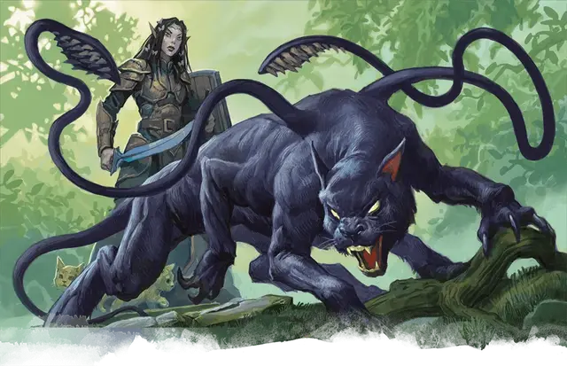

Ива
Wyllow
Средний Гуманоид (Лунный эльф), хаотично-нейтральный, именной НИП

Класс Доспеха 16 (шкурный доспех, щит)
Хиты 132 (24к8 + 24)
Скорость 35 футов
| мод | спас | ||
|---|---|---|---|
| СИЛ | 10 | +0 | +0 |
| ЛОВ | 14 | +2 | +2 |
| ТЕЛ | 12 | +1 | +1 |
| мод | спас | ||
|---|---|---|---|
| ИНТ | 12 | +1 | +5 |
| МДР | 20 | +5 | +9 |
| ХАР | 11 | +0 | +0 |
Навыки Восприятие +9, Медицина +9, Природа +5
Чувства тёмное зрение 60 футов, пассивное Восприятие 19
Языки Общий, Друидический, Эльфийский
Опасность 12 (8400 опыта)
Бонус мастерства +4
Особенности
Наследие фей. Ива совершает с преимуществом спасброски от очарования, и магия не может его усыпить.
Использование заклинаний. Ива является заклинателем 18-го уровня. Его базовой характеристикой является Мудрость (Сл спасброска от заклинания 17, +9 к попаданию атаками заклинаниями). У неё подготовлены следующие заклинания друида:
• Заговоры (неограниченно): искусство друидов [druidcraft], починка [mending], ядовитые брызги [poison spray], сотворение пламени [produce flame].
• 1 уровень (4 ячейки): лечение ран [cure wounds], опутывание [entangle], огонь фей [faerie fire], разговор с животными [speak with animals].
• 2 уровень (3 ячейки): почтовое животное [animal messenger], животные чувства [beast sense], удержание личности [hold person].
• 3 уровень (3 ячейки): призыв животных [conjure animals], слияние с камнем [meld into stone], подводное дыхание [water breathing].
• 4 уровень (3 ячейки): подчинение зверя [dominate beast], поиск существа [locate creature], каменная кожа [stoneskin], огненная стена [wall of fire].
• 5 уровень (3 ячейки): общение с природой [commune with nature], множественное лечение ран [mass cure wounds], древесный путь [tree stride].
• 6 уровень. (1 ячейка): полное исцеление [heal], пир героев [heroes’ feast], солнечный луч [sunbeam].
• 7 уровень (1 ячейка): огненная буря [fire storm].
• 8 уровень (1 ячейка): превращение в животных [animal shapes].
• 9 уровень (1 ячейка): предвидение [foresight].
Действия
Скимитар. Рукопашная атака оружием: +6 к попаданию, досягаемость 5 футов, одна цель. Попадание: Рубящий урон 5 (1к6 + 2).
Изменение облика (2/день). Ива при помощи магии превращается в животное или элементаля с показателем опасности 6 или меньше, и может оставаться в этом облике в течение 9 часов. Ива может выбрать, какое снаряжение останется лежать на земле, какое сольётся с новым обликом, а какое будет надето в новом облике. Ива возвращается в свой истинный облик, если она умрет или потеряет сознание. Ива может вернуться в свой истинный облик бонусным действием в свой ход.
Находясь в новом облике, Ива сохраняет свои игровые параметры и способность говорить, но её КД, способы передвижения, Сила и Ловкость заменяются таковыми для нового облика, и получает все особые чувства, мастерство, черты, действия и реакции (кроме особенностей класса, легендарных действий, и действий логова), который имеет новый облик и не имел друид. Она может накладывать свои заклинания с вербальными или соматическими компонентами в своем новом облике.
В новом облике атаки считаются магическими при определении сопротивления и иммунитета от немагических атак.
Описание
Ива - лунный эльф-друид с зелеными, как изумруды глазами. В ее спутанных черных волосах порхают крыльями бабочки, а маленькие зверушки собираются вокруг ног.
Более двухсот лет назад Ива влюбилась в волшебника Инарка, одного из учеников Халастера и вернулась с ним в Подгорье. Ее счастье в личной жизни быстро угасло, когда подземелье оказалось далеко не тем лесом, который она называла домом. Решив удержать Иву в подземелье, Халастер использовал несколько заклинаний исполнение желаний [wish], чтобы создать для нее волшебный лес, но даже этого дара было недостаточно, чтобы компенсировать уныние друида. Когда Инарк запретил ей когда-либо возвращаться на поверхность, Ива стала совершенно подавлена. Их отношения испортились и переросли в ненависть окончившуюся градом заклинаний с обеих сторон, результатом чего стала гибель Инарка. После того как ярость Ивы стихла, все, что ей осталось, - это вечная скорбь и надвигающееся безумие. Пленница собственной вины, она остается в Подгорье в соответствии с пожеланием Инарка.
Теперь дом Ивы - Подгорье, и все воспоминания о жизни на поверхности стерлись из ее памяти. Она отстранилась от мира, однако добра к тем, кто без вреда проходит через ее владения, но становится жестокой, когда ее лесу или его мирным обитателям угрожает опасность. Прежде чем приступить самой к уничтожению нарушителей, для того, чтобы ослабить своих противников, она отправляет к ним зеленого дракона и вермышей. Также Ива может вызвать из леса шесть деревьев с пробужденным интеллектом при помощи свистка.
Зверь-спутник Ивы - ускользающий зверь [displacer beast], Криссанн, назван в честь наемника-человека, с которым эльф подружилась много лет назад. Прежде чем их дружба переросла в что-то большее, вмешался Халастер и использовав свою магию, настроил нового друга Ивы против нее. В отчаянии друид с помощью лесных существ убила Криссанна в лесу и поклялась больше никогда не позволять другому смертному завоевать ее сердце.
У Ивы противоречивые чувства к Халастеру. Она благодарна ему за то, что он предоставил ей дом и сохраняет Ивовый Лес при помощи своей магии, но осуждает его в смерти Инарка. Также Ива преисполнена жалостью к нему, ибо Безумный Маг тоже как и она, заключен в тюрьму собственного изготовления. Ива предполагает, что он уже не человек, а бессмертная сущность, состоящая из чистой магии. Поэтому она потеряла всякую надежду от него избавиться.